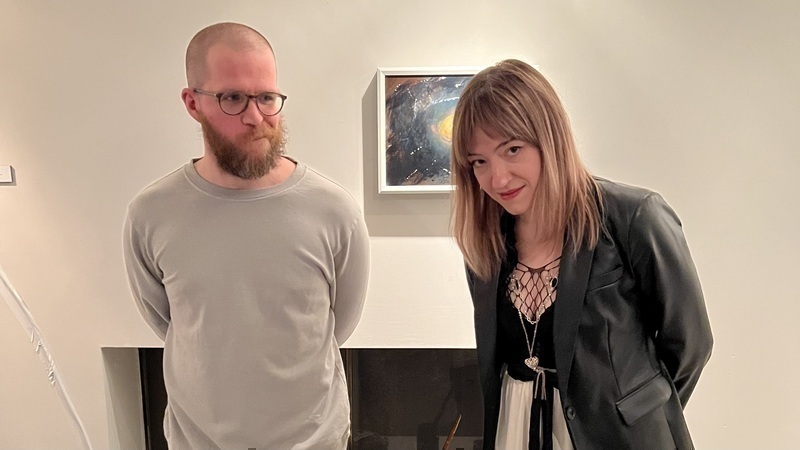
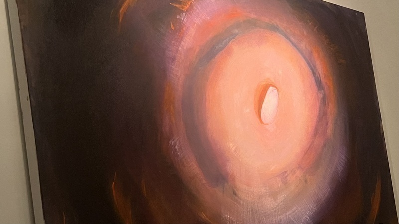

log
Ebs Sanders reading from Intimacies that did not destroy us at Poet's Row


at the end of the day people won't remember / what you said or did, / they will remember how you made them feel.

together love

highly recommend staring at static and listening to noise for long periods of time as a form of divination. I've created a couple little scripts to facilitate this practice; please feel free to grab them from my GitHub if you're so inclined.


detail from settle, a multimedia collaboration with Alexandra Wood. You can see the installation at Philadelphia Small Works for the next two weeks.
williamthazard [at] pm.me